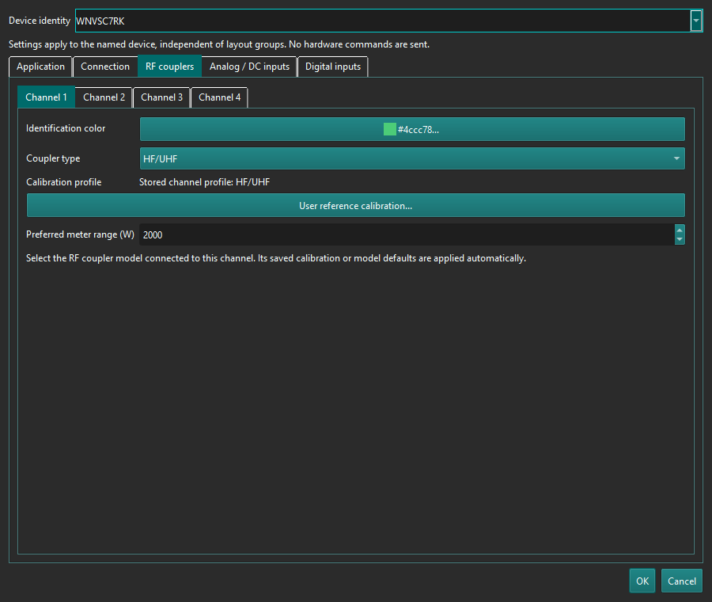
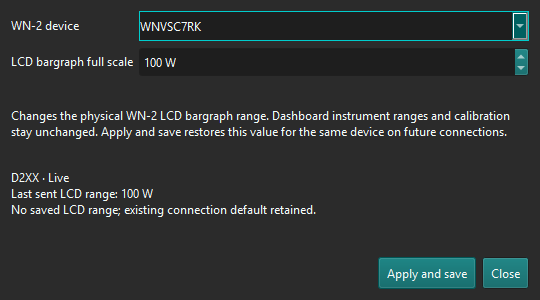

Couplers, profiles and hardware LCD ranges
Select the installed coupler
Open Device → Settings → RF couplers. Check the WN-2 identity and choose the model installed on each channel. Press OK to save your choices. Do this before judging power readings or comparing amplifier input and output.

Coupler choices are kept separately for each WN-2 and channel. Select image to enlarge.

RF couplers are factory calibrated and do not require additional calibration. For normal operation, select the correct model and use its established settings. Do not change conversion values simply because a display scale looks wrong.
Current WaveNode coupler models
Choose the exact label on your coupler in Device → Settings → RF couplers → Channel 1–4 → Coupler type. Item tooltips and the selected profile show the rated range and operating band. A rating is a limit, not a required transmit level; HF-8KW works at normal amplifier output levels as well as higher rated levels.
| Model | Rated range | Operating band | Processing family |
|---|---|---|---|
| HF-1 | 2,000 W | 1.8–60 MHz | HF |
| HF-8KW | 8,000 W | 1.8–40 MHz | HF-8KW |
| LP-1 | 60 W | 3.5–60 MHz | LP-1 |
| L/M-1 | 2,000 W | 100 kHz–5 MHz | HF * |
| CS-1 | 2,000 W | 1.8–60 MHz | HF * |
| UHF-1 | 300 W | 120–470 MHz | HF |
| UHF-2KW | 2,000 W | 120–170 MHz | HF |
| UHF-220MHz | 2,000 W | 200–275 MHz | HF * |
| UHF-70cm | 2,000 W | 400–470 MHz | HF * |
* Shared-family mapping: L/M-1, CS-1, UHF-220MHz and UHF-70cm use the standard 2,000 W HF-family conversion and sensor code 0, as approved by the owner based on their rated ranges. These exact names are absent from the supplied host/firmware reference. The family calculation is implemented and numerically tested; those individual model mappings still need physical qualification. They are selectable and usable, not unavailable.
Eligible new configurations for all nine models use WaveNode-compatible (recommended): host factory conversion, corrected detector average and paired-peak SWR. Existing saved profiles keep their prior settings, including Legacy and user reference matching. The paired-peak sample-selection method is independently implemented by RayWn2App; it is not the original host's history algorithm.
HF-8KW: the host reference uses different high-level detector compensation on CH1 than on CH2–4. RayWn2App preserves that channel-specific response. Compare the same channel when checking the original host. The Coupler type list shows HF-8KW only. An existing historical 8KW profile displays as HF-8KW while retaining its original stored identifier, calibration and measurement policies. Opening Settings and pressing OK does not rename that profile or request hardware synchronization. Switching to another type and back restores the retained high-power profile. If separate historical and current profiles already exist, they remain separate; the active high-power profile is retained. HF/UHF also remains available as a historical combined-family selection. Custom types remain intact.
The firmware uses three shared sensor families, not nine unique codes: standard HF = 0, LP-1 = 1, HF-8KW = 2. Code 3 is unsupported. The saved software profile and the physical sensor-family field remain distinct. Changed families are authorized by Settings OK as described below.
Send coupler families with Settings OK
Changing Coupler type and pressing OK saves the software profile and authorizes a sensor-family change for those changed channels on the selected connected WN-2. Models sharing a hardware family require no additional sensor transaction if that family was already sent. Changes to measurement processing, colors, ranges or other software settings alone do not authorize a sensor change. Cancel saves no device changes and sends nothing.
The application preserves the last authorized selections on untouched channels. It does not assume saved software settings describe the meter's actual state. The baseline comes from the current session's last complete configuration write, including the established Connect initialization. The protocol has no verified acknowledgment or sensor-state readback: Sent means a complete USB write, not confirmed application by firmware.
If disconnected, stale, recovering, busy with a pulse/reset, or using Scope/capture, software changes are saved and hardware synchronization remains Pending. Stop the activity or establish a fresh authorized connection. Reopen Settings, select the intended device, check Also synchronize unchanged mapped coupler selections on OK, review all four displayed selections, and press OK to authorize a retry. The optional checkbox includes mapped channels of that device; unchanged Custom/None channels retain their session bits. A changed unsupported model blocks that request without sending a partial configuration.
The status bar and Application Log report saved, sent, pending or failed results; reopening Settings shows the selected device's current session status. A failed or partial write leaves hardware effects unconfirmed. Check the device, reconnect and explicitly review/retry; it is not queued for automatic resend. Startup and reconnect do not apply pending or saved coupler choices. Existing approved connection initialization remains separate.
Coupler synchronization does not authorize output activation, a protection reset, Scope start, rotator movement or unrelated setting changes. It retains authorized continuous state and does not extend pulse deadlines. RF protection limits and relay controls are unchanged. The only requested hardware change is the selected two-bit sensor-family field. Verify the WN-2's LCD/coupler behavior during your initial RF-off setup before normal operation.
20KW conversion is deferred. Any existing saved custom/20KW profile is retained; no new 20KW factory calculation or hardware code is added. RF accuracy on a particular coupler, load and meter is separate from matching host calculations. See Measurement processing and User reference matching.
Display range is a different setting
An instrument's Maximum controls its on-screen scale. It does not change the coupler's rating or the WN-2 LCD range. Automatic range changes only the application display. Choose Device → LCD Display to change the WN-2's own LCD full-scale range. Select the intended device, enter the supported range, then Apply. Read the status and check the physical display.

The hardware LCD setting is separate from dashboard meter ranges. Select image to enlarge.

Optional reference matching
If you want RayWn2App to agree with another meter, use User reference matching. You may use a reference that suits your station, from a laboratory meter to the wattmeter in an amplifier. It is an optional comparison, not a requirement to operate the WN-2. Settings are retained by device, channel and coupler model. When changing a coupler model, review the selected settings rather than assuming one model's reference curve applies to another.
Help home · RF StateSide · RayWn2App operator guide